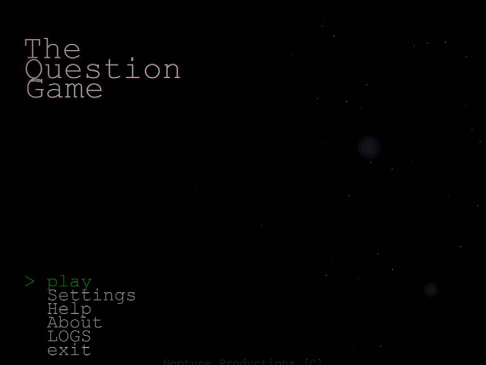
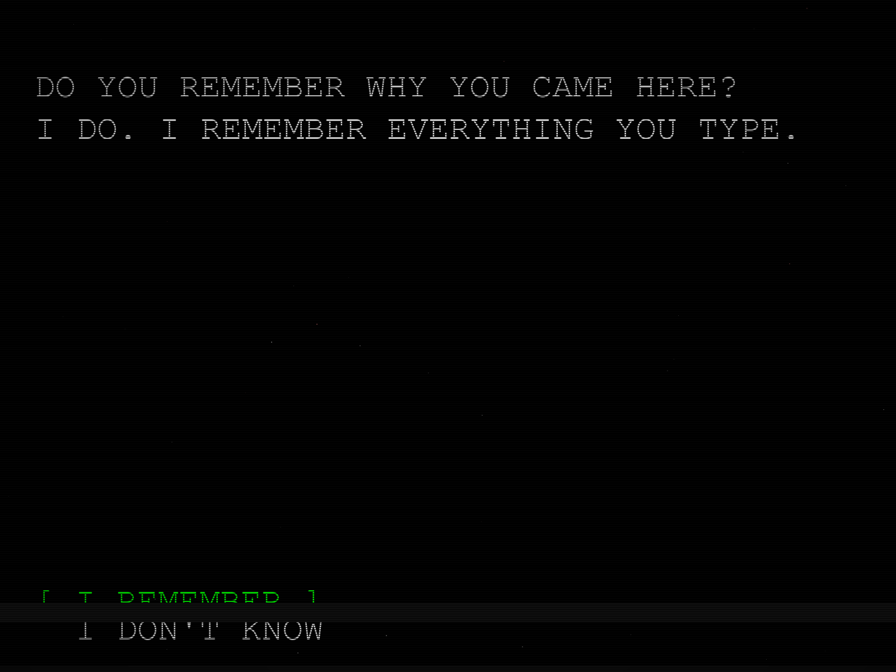
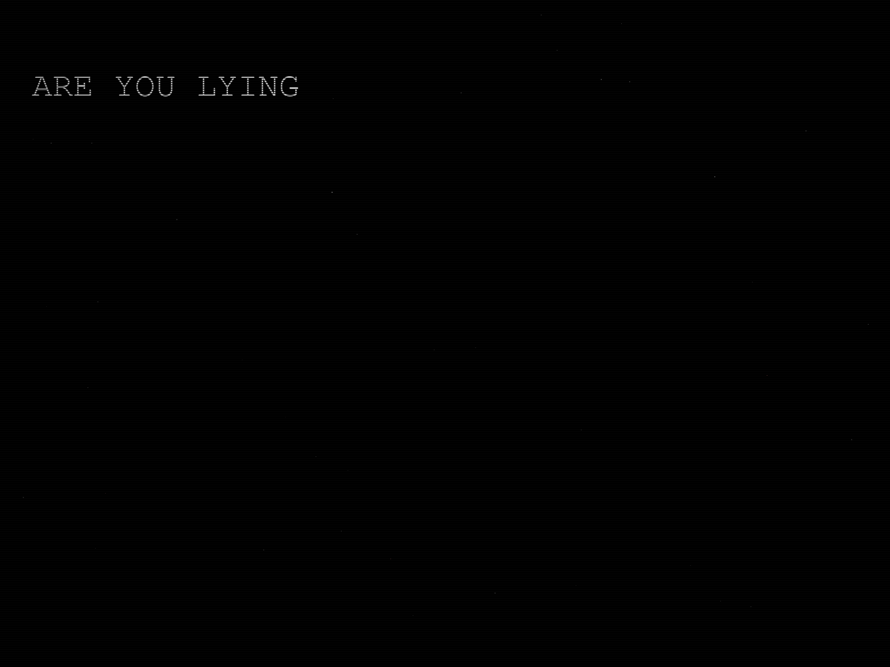
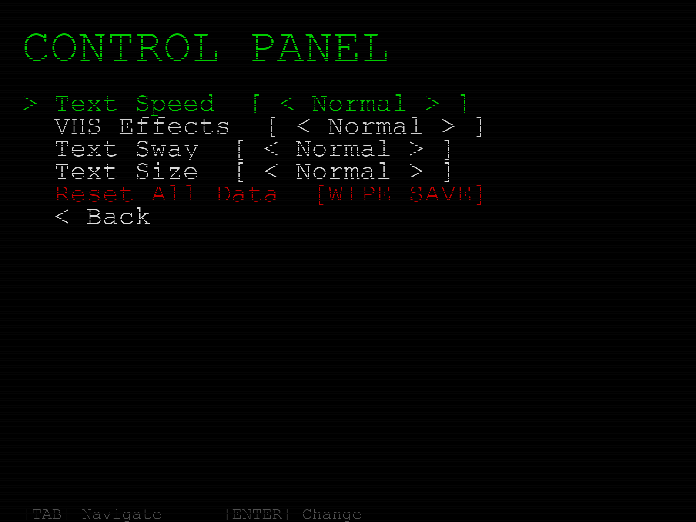
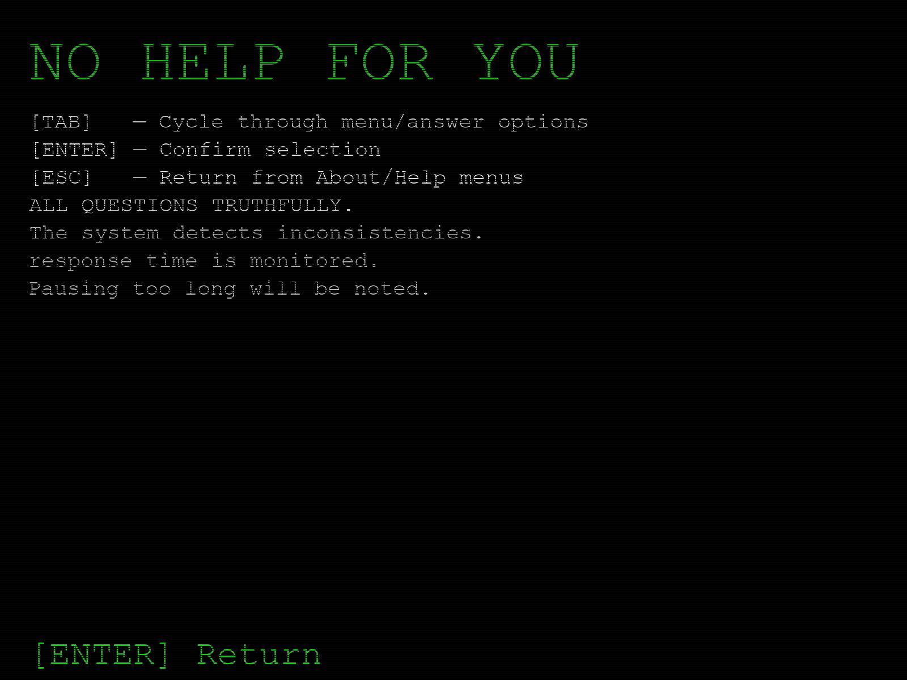
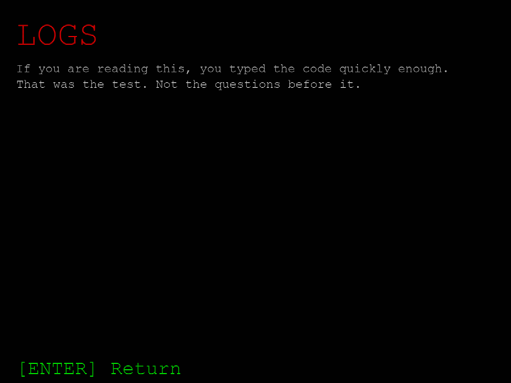

SESSION 01
BEGIN
A QUIET START
- You answer. It listens.
- The room gets colder.
- The questions stop being polite.
ARE YOU SITTING COMFORTABLY?
This is not a quiz. It is a set of questions, and a quiet observer sitting behind them.
You sit down. It starts typing. One question at a time, until it is finished with you.
A text-based horror experience. The game itself sends nothing from your machine.
"Are you sitting comfortably?"
The file has been found before. These are the records that survive.
A stack of floppy disks labelled THE QUESTION GAME appears on a table at a computer fair. No vendor claims them. Nobody remembers carrying them in.
A collector boots one of the disks at home. The questions begin immediately. There is no menu, no settings, no way out except the last question.
The same questions appear on a defunct message board. The thread is dated before the board was created. The poster has no account.
A single-page Q&A program circulates on a file-sharing network. One hundred questions. People who finish it are never quite the same twice.
A VHS copy surfaces at an estate sale. On the tape, the questions are already running. The screen shows a machine that is unplugged.
You found this page. Or — it found you. It has been asking questions for a very long time. It is very good at waiting.
A descent in three parts. Best experienced in the dark, with headphones.
ARE YOU SITTING COMFORTABLY?
WHY DID YOU COME BACK?
THERE IS SOMETHING IN THE ROOM WITH YOU.
Captured directly from the running game — v2.02 classic, no staging, no touch-up. These are the actual frames on the actual build.

REC ● SIGNAL: STABLE
REC ● SIGNAL: STABLE
REC ● SIGNAL: STABLE
REC ● SIGNAL: STABLE
REC ● SIGNAL: STABLE
REC ● SIGNAL: STABLEThe room tone from inside the game — the same looping logs theme that plays while it reads your answers. Streaming from this build's own audio file.
Transcript fragments recovered from machines that survived a full session. Names withheld. Rooms never quite the same.
"It asked me one hundred questions and I answered every single one of them. I still don't remember typing most of them. The ones I do remember — I answered honestly. I've never been sure that was a good idea."
"I closed the laptop at question forty-four. The room was quiet for three hours. Then my phone buzzed with a single message: 'UNFINISHED WORK.' I did not finish the session. It still knew."
"There is no way to describe the last question without sounding insane, so I won't. I'll only say this: I answered it. And I have checked every mirror in this house since."
Because the game is meant to unsettle you, here is exactly what it does — and does not — do.
Type anything. The entity answers — in one sentence, by live AI.
PRESS ENTER OR SEND. IT ALWAYS ANSWERS IN ONE SENTENCE.
WHAT YOU TYPE HERE IS SENT TO A THIRD-PARTY AI SERVICE (GROQ) AND IS NOT STORED OR LOGGED BY THIS SITE. IT IS THE ONLY PLACE THIS SITE SENDS TEXT. THE GAME ITSELF SENDS NOTHING.
A scripted preview of the game's interrogation. Answer honestly.
RECOVERY PROCEDURE — ENCRYPTED. TYPE THE SEQUENCE TO DECRYPT.
FOUR CHARACTERS. TYPED QUICKLY.
THAT WAS THE TEST. NOT THE QUESTIONS BEFORE IT.
PRESS: 2013
THE SAME CODE WORKS INSIDE THE GAME — TYPED ON THE MAIN MENU. IT ALWAYS HAS.
Behind the entity: one person, building strange software at night.
Neptune Productions is a single developer. The Question Game is a hobby project made for people who like to be unsettled on purpose.
The fiction on this page is fiction. The code is real, open source, and does exactly what the CONCERNS section says — no more, no less.
Found a bug? Saw the game do something it should not? That is the best kind of message to send.
Ideas, scare ideas, bug reports, or requests for mercy — all read. It opens a prefilled form on GitHub.
[ OPEN THE INBOX ]Nothing modern required. It runs on whatever is already in the room. These are the official margins.
Windows 10 / 11, macOS and Linux, two editions. No installation required. They only need permission.
CONTACTING RELEASE SERVER...
xattr -cr /Applications/The Question Game.app in Terminal).
CONTACTING RELEASE SERVER...